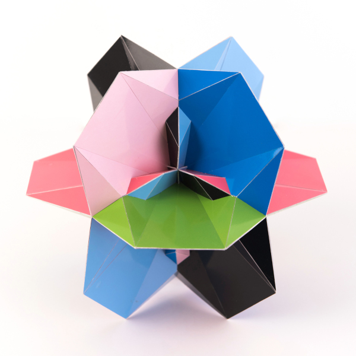
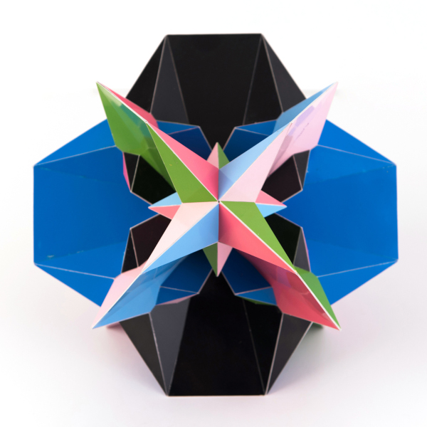

Octahedral Hepta Saucer

Pictures copyright by PhotoArt Studio Hörby
This model was built somwhere in 2011 and its dimensions is around 21 cm x 21 cm x 21 cm. The model is quite big, because of some thin parts.
This polyhedron only consists of regular heptagons that are folded over a diagonal and for this polyhedron the folding is done in a 'W' shape:

The polyhedron has the same symmetry as a cube, including the reflections. missing. When my program found this possibility of folding heptagons it attracked my attention because of it has some intersections while it isn't that complex. Also when you look into an order 4 symmetry axis it seems there is an eight pointed star in exaggerated perspective as you can see in the picture below.

Last Updated
2019-12-18